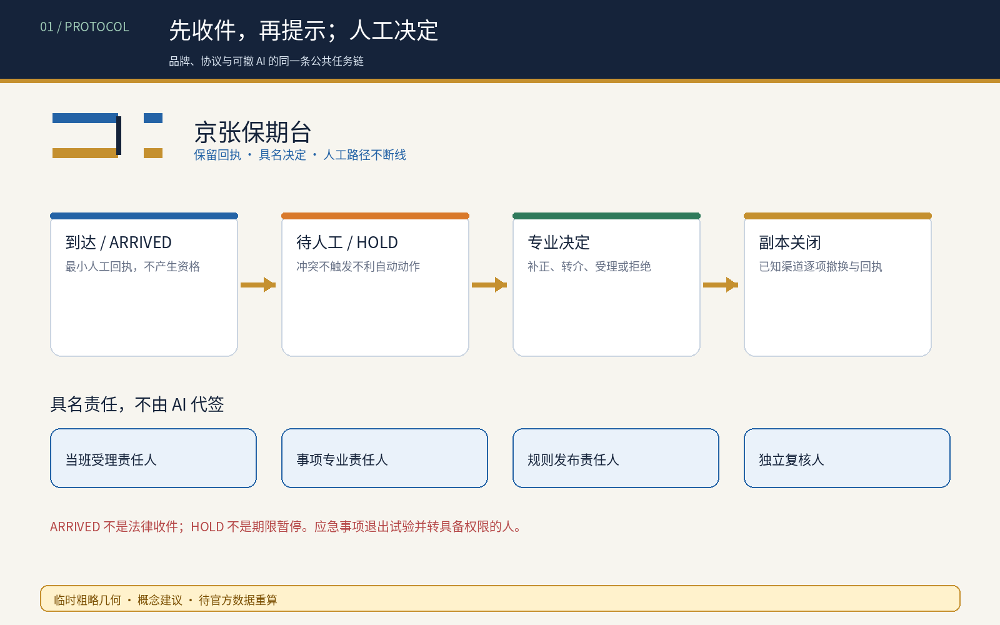
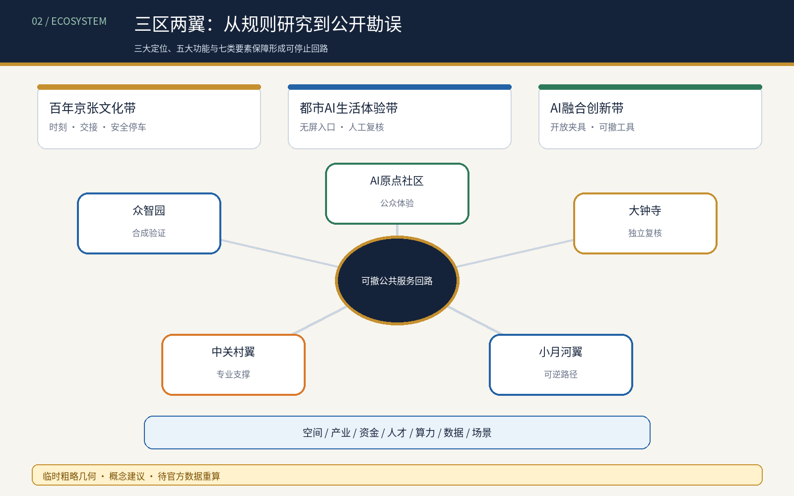
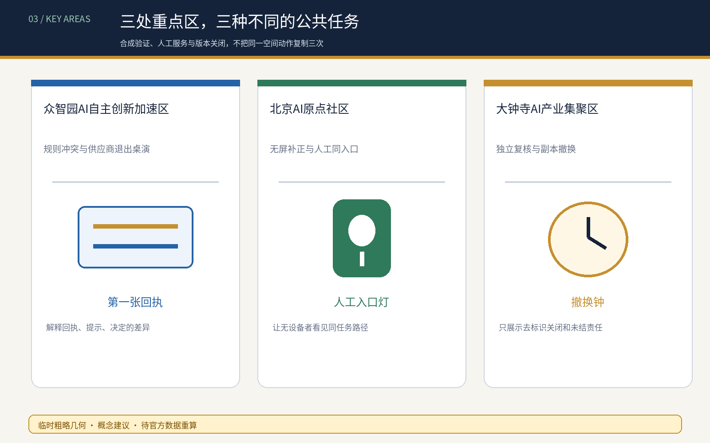
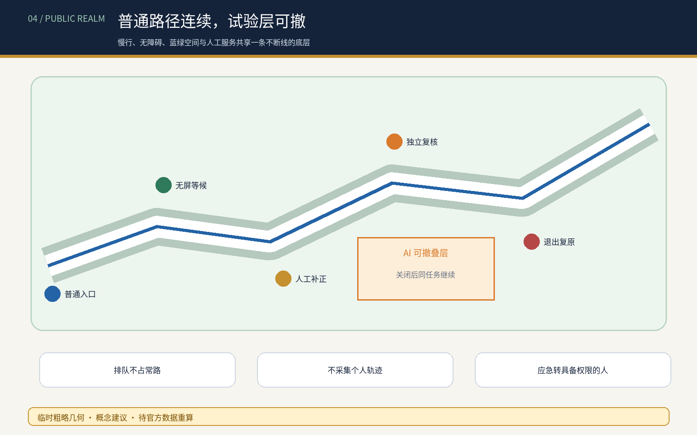
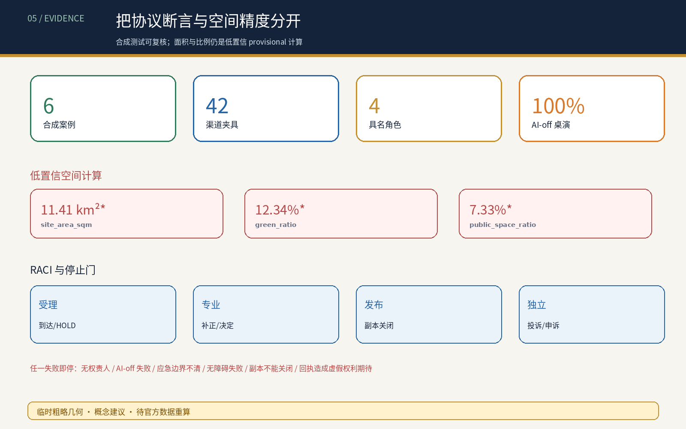

临时边界与精度
所有面积与比例均由临时粗略 polygon 和概念图层计算，置信度 low；不是官方面积、控规指标或实施依据。
总览地图

三层范围 · 用地分区 · 建筑与更新项目

重点区域 · 三座概念地标

交通慢行 · 蓝绿公共空间

核心指标 · 自检状态

AI 场景 · 任务覆盖
- 保期回执台
- 规则冲突桌演
- 无屏补正桌
- 队列保全
- 独立复核
- 副本撤换
- 争议封存
- 服务退出
- 多语缺口卡
- 失败年鉴
- 无手机同入口
- 截止前拥堵
agent.1—agent.6 的实质交付见 taskbook-deliverables.json；合成状态机、RACI、应急例外、隐私、保留、投诉和退出门见 protocol-audit.json。
核心指标 · 自检状态
site_area_sqm · low confidence11.41 km²*
green_ratio · low confidence12.34%*
public_space_ratio · low confidence7.33%*
自检状态：deterministic、SPATIAL_REVIEW、VISUAL_PACKAGING、PROFESSIONAL_EVIDENCE 必须全部 PASS；3 个 provisional notices 为预期精度警示。
来源与假设
来源：sources.json、来源登记、标准快照与三份原创审计账本。假设：官方边界、红线、权属、消防、市政、文保、真实程序和受影响者测试仍缺失。
sources.json · assumptions.json · taskbook-deliverables.json · protocol-audit.json · rights-ledger.json